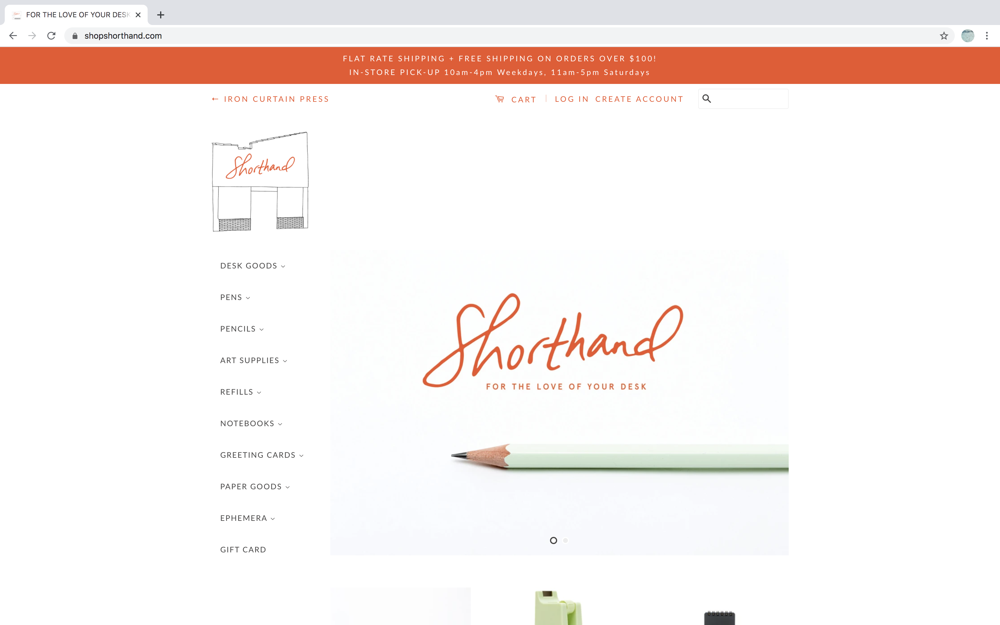
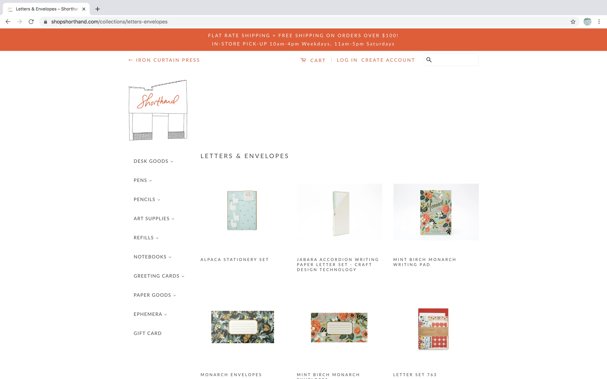
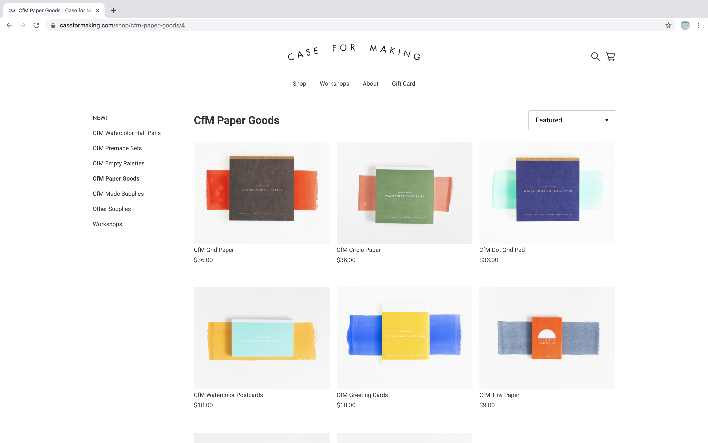
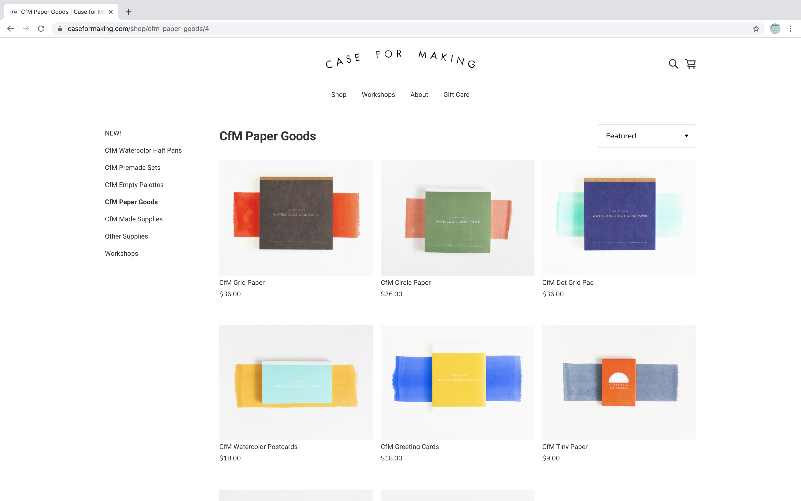

Final project proposal
Introduction
On Point
On Point is a local stationary store in San Luis Obispo, CA. The staff curates a collection of unique and high-quality products created from all around the world. On Point strives to be a peaceful space customers enter to be inspired, admire design, and find joy in the little things.
Target audience
Our target audience focuses on Millennials and Generation Z. We are looking at local students and young professionals with a soft spot for stationary whether it is for day to day working or fun hobbies. This site can be used by tourists seeking stationary stores, locals for in-store events and deals, and receiving updates for what products are being sold.
Our target audience’s primary goals are to purchase unique and high-quality pieces of stationary for themselves and/or others. They constantly seek new and fresh designs to enhance their experience in school, work or their hobbies.
Comparative analysis
Shorthand
 Case For Making
 

The Social Type


Website content
Home
Welcome to On Point. If you’re a bit like us, small things make your heart happy!
[view of in store shelves featuring pens and notebooks.]
About
Traveling the world brings to our eyes new perspectives and design. Stationary is no exception! Inspired by her own travels, owner Julie hopes to share with and inspire the community through her curation of stationary pieces.
[portrait of owner in store.]
Shop
We continue to curate new products into the storefront as seasons change. Though many products will not remain for sale for long periods of time we hope you will fall in love with new items as we discover them and share with you all.
[photo of each item with price.]
Contact
Come say hi at our storefront located at 634 Clover St. San Luis Obispo, CA. Store hours Sunday: Closed Mon-Thur: 9-6pm Fri-Sat: 9-8pm Call Us: (805) 482-8391 Email: onpointstore@gmail.com
[view of storefront from street showing building during the day.]